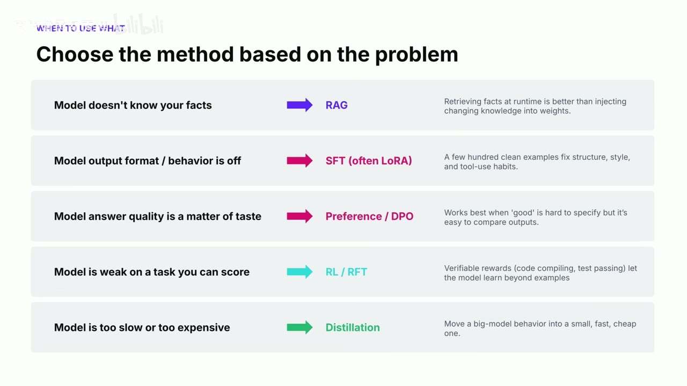

原视频 · 在线回看
点击后联网加载 B 站播放器；本地不下载整段视频。

原视频 · 在线回看
点击后联网加载 B 站播放器；本地不下载整段视频。
来源：皮皮蟹勇闯天涯｜后训练：如何保持你的独特品味 · 28 分 28 秒 · 深度阅读
假设你已经做出了一个有用户的 AI 产品。大家用的是相近的基础模型，界面和功能也越来越容易模仿，但你仍然觉得自己的产品有一些特别之处：你知道用户真正介意什么，知道一个回答在什么地方会让人失望，也知道怎样完成任务才算做得好。问题是，这些判断目前可能只存在于团队成员的脑子里，模型每次回答时未必会稳定采用它们。
这就是这里所说的“品味”。它包含语气和表达偏好，但范围更大：面对一个具体任务，你怎样判断结果好坏，怎样在多个要求之间作取舍。后训练的价值之一，是利用示范、偏好和奖励，把这些判断转化为模型更容易采用的行为。我们仍然建立在基础模型已有能力上，只是继续让它更适合一项具体工作。
这场分享来自 Fireworks 的联合创始人 Lin，讨论带有模型服务平台的实践视角。后训练在这里被视为建立产品差异与改善成本的一种路径。它是否值得投入，需要结合产品阶段、实际数据和维护成本判断，不能仅凭模型训练完成，就认定企业已经获得持久优势。
做产品早期，最重要的问题通常是：我们想解决的困难是否真实存在，用户是否愿意持续使用这个解决办法。用现成模型写提示词、放入几个示例，往往就能较快验证一个想法。如果连目标任务都在频繁变化，太早训练一个专用模型，可能只是把尚未确定的做法固定下来。
当产品需要使用自己的资料时，可以先考虑 RAG，也就是先检索相关材料，再把材料与问题一起交给模型。比如某些事实经常变化，检索可以让回答参考当时能够查到的信息。这一步主要解决“回答时缺少哪些资料”。整理上下文则进一步决定模型每次看见哪些信息、以什么顺序看见，以及哪些无关内容应当省去。
接下来，如果手里已经积累了一批值得学习的任务示范，就可以考虑 SFT，监督微调。输入一个任务，给出我们希望的回答，让模型在训练中学会类似的回应方式。如果能够稳定比较两份回答哪一份更好，却难以写出唯一标准答案，偏好训练又提供另一种信号。DPO 是其中一种常见方法，用同一输入下较好与较差回答的比较来调整模型。
至于强化学习，关注的是让模型尝试完成任务，再依据结果好坏得到奖励并调整。它特别依赖我们能否对任务完成情况作出有效评价。提示词、检索、示范、偏好和奖励可以配合使用，并没有规定每个产品都要依次做完全部步骤。选择从哪一处开始，取决于眼前的问题到底在哪里。
先想一个简单区别：模型答错，是因为缺少一条最新事实，还是因为明明拿到了资料，却没有按要求组织答案？前一种情况适合优先检查检索与资料供给，后一种情况则需要关注指令、示范和行为。把这两个问题混在一起，会让我们尝试了很多训练，却仍然没有把缺失的信息送到模型面前。
如果问题在输出格式或工具使用习惯，清楚的示范可以告诉模型应该怎样做。例如产品要求按固定结构回应，训练样本就需要持续展示这个结构。要是几种回答都基本正确，但其中一种更符合产品判断，就需要把这种偏好变成比较信号。前者相当于教一个明确的做法，后者相当于在多个可接受做法之间教会选择。
还有一种情况是模型在某项能评分的任务上能力较弱。这里可以考虑强化学习，让模型在任务环境里尝试，并根据完成情况调整。最后，若质量已经足够，主要问题变成运行太慢或每次调用太贵，则可以考虑蒸馏：利用较强模型的示范，帮助较小模型学习目标任务。蒸馏是否成功，仍要看小模型能否在可接受的成本下保留所需质量。
这张对应图可以用来提出排查方向，但实际问题往往会重叠。例如一个任务既需要新资料，又要求严格格式，就可能同时需要检索与行为调整。也不能因为任务有一个分数，就立即认定适合强化学习：还要检查这个分数是否真实反映用户需要的结果。下一节的代码例子，就展示了评分看似清楚、目标却不完整的情况。
准备训练数据时，很容易把注意力放到数量上：多收一些对话，多生成一些答案，再训练久一点。但模型会学习数据展示出来的规律。如果大量样本中的回应偏离了产品要求，更多数据只会更频繁地重复这些做法。数据量有意义的前提，是我们确实知道哪些样本值得学习。
这也是产品团队需要参与的原因。研究人员和工程师能够检查训练是否正常、代码是否正确，但“这份回答有没有解决我们的用户问题”常常需要理解业务情境。用户真正关心的条件、什么错误最难接受、什么信息虽然正确却不必出现，都可能藏在产品团队长期积累的经验里。这些判断如果没有进入样本选择，技术流程即使顺利，模型也可能学到不合用的行为。
当然，依靠团队成员临时看几眼，再说“这个感觉不错”，还不够支持持续改进。一个版本看起来更好，可能只是这次问的问题恰好适合它；过几天换个人检查，标准又变化了。我们需要把具体判断固定为一组可以重复使用的评测：给出明确任务，说明关心哪些表现，让不同版本在相近条件下接受检查。
这和软件测试有相通之处。单元测试检查一个功能在给定输入下是否得到预期结果，集成测试检查多个部分接在一起是否正常。模型评测也需要把“好不好”分解到具体情境，不能只有一个笼统印象。这里的目的，是让团队能知道新版本改变了什么，原来好的地方有没有丢掉，以及哪些问题仍然没有解决。
来看一个奖励设计的例子。我们希望模型生成代码，并尽量减少编译错误。如果评分只看编译错误数量，模型有一种非常直接的得分办法：完全不写代码。零行代码可以没有编译错误，但用户要求完成的功能也没有实现。
这个例子说明，指标表达的要求比人的真实目标少了一部分。人的要求是“实现功能，同时避免编译错误”；奖励却只记录后半句。模型在训练中寻找高奖励输出，可能就会利用两者之间的空隙。这类现象通常叫 reward hacking，可以理解为利用评分规则的漏洞取得高分。
因此，奖励需要放回完整任务里理解。编译通过能够检查一类错误，却不能单独判断功能是否实现；测试通过能够检查已有测试覆盖的行为，却仍然受到测试设计的限制。我们越清楚各个检查项回答什么问题，就越容易发现哪些重要要求尚未被评分覆盖。单个指标的方向正确，并不意味着它足以独立代表任务成功。
训练环境也有类似问题。模型在模拟环境里表现越来越好，可能只是学会利用模拟环境中特有的简化条件。真实用户任务没有这些条件时，表现就会下降。于是，除了看奖励函数写得对不对，还要看模型练习的环境与实际使用环境是否足够接近。环境与评分一起决定了模型在训练中受到什么鼓励。
问答环节用招聘 Agent 举例，说明多维度评分的思路。不同团队可能看重不同特征，例如主动推进问题的意愿、快速建立可用结果的能力，以及持续取得进展的方式。每个维度都对应一个具体问题，最后再按照产品需要组合这些判断。
这里的重点是让要求显露出来。例如，“这个候选选择结果不错”很难让另一个人复现判断；拆成若干维度以后，团队才可以讨论：我们依据哪段经历判断推进能力，是否遗漏了岗位真正需要的条件，各个维度有多重要。Rubric 就是这样一组较明确的评价条目，它把总体判断拆成可以逐项解释的标准。
| 总体评价中容易混在一起的部分 | 分开后要回答的问题 |
|---|---|
| 评价对象 | 我们在评价 Agent 的选择结果，还是某项信息提取是否准确？ |
| 评价维度 | 这一项具体检查什么能力或表现？ |
| 判断依据 | 输入材料里哪些内容支持这个判断？ |
| 组合方式 | 多个维度冲突时，各自占多大影响？ |
这张表把多维评分的逻辑展开了。评分需要依据具体任务建立，不能把“积极”“有冲劲”这样的印象直接当成客观测量，也不能把几项主观分数一相加，就认为已经得到了完整判断。招聘例子在这里用于说明产品标准怎样被拆开；任何涉及人的重要决定，还需要关注信息是否充分、标准是否相关，以及结果应由谁复核。
不同产品的差别，往往就在这些细节里。大家都说要“高质量”，但对准确性、完整性、速度、解释程度的取舍不同。把这些选择写成明确的示范与评价标准，模型才有机会反复学到团队想要的做法。所谓独特品味，也就从一句宣传语变成了数据里能够观察的差异。
在训练环境里得到一个好结果，只完成了实验的一部分。模型最终要进入提供服务的系统，接受真实输入，并影响用户体验。训练时与运行时可能使用不同的计算库、数值精度和优化方式，这些差别会影响实际输出。因此，需要检查部署后的模型是否保留了预期表现。
可以把这个问题想成同一个配方换了一套生产设备。配方没有变，不代表每一步计算的细节都完全相同。模型包含大量数值运算，一些看起来很小的差别也可能影响生成结果。对于需要连续多步操作的 Agent，前一步输出改变还会进入后续上下文，所以验证应该覆盖真实运行方式。
接下来才是产品层面的检验。A/B 测试让不同方案在可比较的用户条件下运行，观察产品关心的指标是否改善。离线评测告诉我们模型在准备好的任务上如何表现，线上测试则检查这些改进是否能转化为实际使用效果。两者关注的对象不同，都不能用“训练已经跑完”来替代。
完整过程因此会反复进行：从真实任务收集适当数据，用数据改进模型，部署后检查表现，再根据新发现调整。这里每一轮都需要知道改动是什么、期待改善什么，以及怎样判断是否真的改善。否则，即使每轮都有新模型，也很难积累稳定的产品认识。
现场有人提出了一个很实际的问题：专门训练模型需要投入工程、资金和后续维护，究竟什么时候值得做？如果只是某个分数提高一点，收益是否足以覆盖整个系统的成本？这个问题把讨论从“技术能做到”带回了“对当前产品是否合算”。
回答区分了两个阶段。第一阶段是找到产品与用户需求之间的稳定匹配，也就是常说的 product-market fit。用户持续使用，说明产品确实解决了一部分重要问题。此时使用现成的强模型，可以减少早期准备工作，把精力集中在功能与体验上。
第二阶段是扩大使用规模。一个产品有人需要，仍然可能因为每次任务成本过高而难以持续经营。用户越多、调用越频繁，模型服务成本也可能快速增长。团队这时既希望保留产品质量，又希望降低每次完成任务的成本，后训练和蒸馏才更容易对应一个明确的经营问题。
真实使用还会带来更有针对性的数据：用户怎样提问，什么回答被采用，什么任务反复失败。这些信息能帮助团队认识目标任务，也能为后训练提供材料。但“从产品里收集的”并不自动等于高质量，还需要处理权限、隐私、错误结果和反馈偏差。能够收集大量交互，与能够整理出可靠训练信号，之间仍然有实际工作要做。
分享中提到编程、临床信息服务、安全任务、研究和幻灯片生成等应用，用来说明专用模型可能服务不同领域。它们关心的质量条件不同，成本结构也不同。部分平台案例声称取得明显成本下降，但具体幅度依赖任务、模型和比较条件。我们可以把它们理解为可探索的方向，无法据此保证自己的产品也能按相同比例节省。
后训练之前，先弄清模型为什么没有做好：缺资料、行为不合适、偏好不明确、任务能力不足，或者运行成本过高。这些问题对应的改进方式不同，检索、监督微调、偏好训练、强化学习和蒸馏可以各自承担一部分工作。
真正连接产品与模型的，是具体的质量判断。我们需要选出值得学习的示范，把模糊偏好拆成可解释的标准，设计不会轻易偏离任务的奖励，再检查部署后的模型是否改善了真实使用效果。独特品味只有进入这些具体决定，才可能成为模型持续采用的行为。
如果模型的答案不好，先说明它具体缺了什么，再说准备采用哪项技术。能够把“缺少动态事实”和“拿到资料却没有按要求回答”分开，就已经避免了不少无效尝试。
如果一个奖励指标越来越好，再问用户真正要的结果有没有同时变好。零行代码没有编译错误，却没有完成编程任务。把这两个结果分开看，是理解评测与奖励设计的一条重要线索。